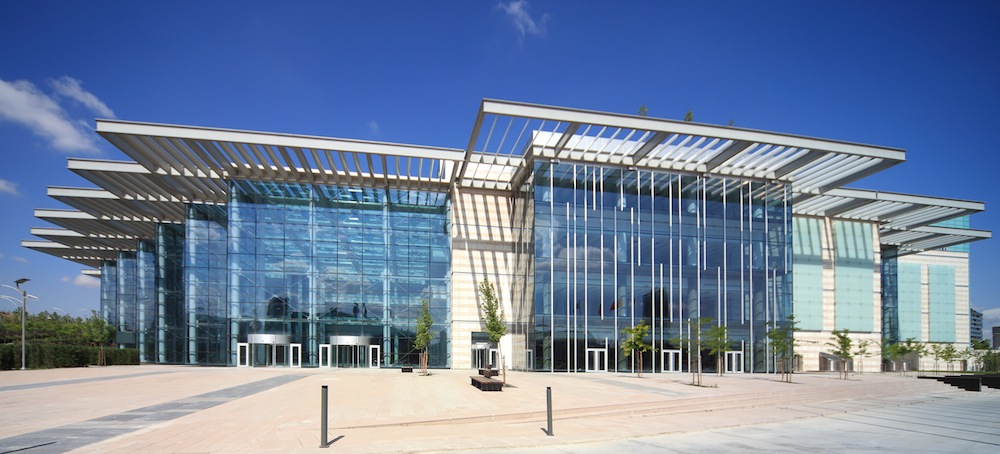
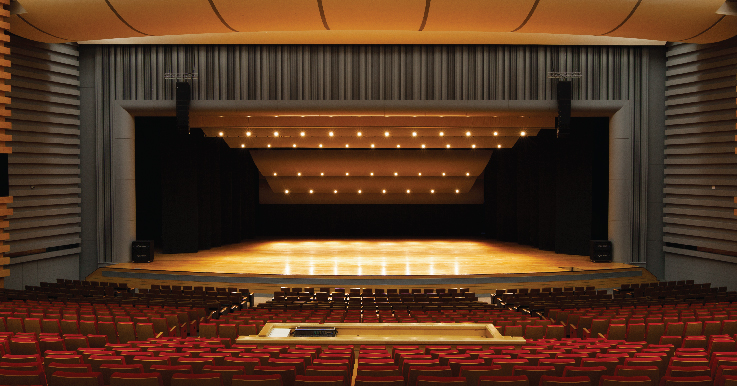

CONGRESIUM ANKARA

The Tribute Festival is taking place in a perfect place to feel the atmosphere. It has a huge Concert Hall and enormous stage! It is also very comfortable for audiances

The Congresium is located so close to the city center that makes transporation very easy. Here is a simple map of a festival location; you can also use google maps by clicking on the image.